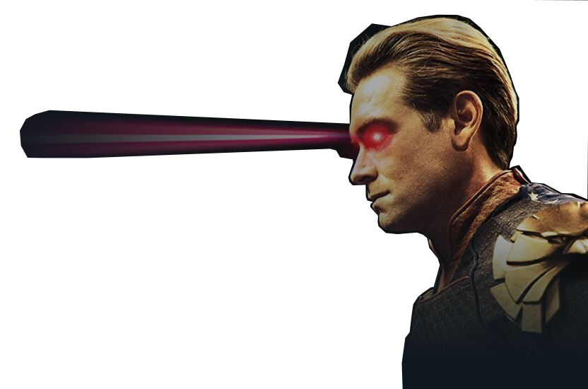

The Boys es una serie de televisión web estadounidense de superhéroes desarrollada por Eric Kripke para Prime Video. Basada en el cómic del mismo nombre de Garth Ennis y Darick Robertson, sigue al equipo homónimo de justicieros en su lucha contra diversos individuos con superpoderes que abusan de sus habilidades.